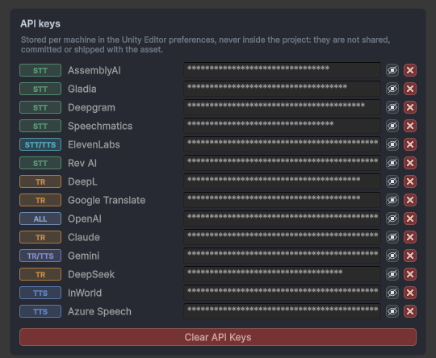
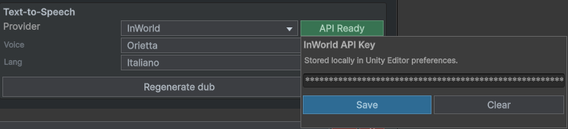

SubVox Pro — 提供商设置指南
SubVox Pro 不附带任何 API 密钥。使用以下任一提供商的服务时，都需要使用你自己的密钥，并将其粘贴到 Tools ▸ SubVox Pro ▸ Settings（或
SubVox Pro 窗口内的提供商面板）中。密钥仅存储在本机的 Unity 编辑器首选项（EditorPrefs）中，不会提交到项目中，也不会随构建版本分发。有关各服务的法律条款，请参阅
Third-Party Notices.md。
⚠️ 免费套餐和定价经常变更。以下数据在撰写本文时是准确的；在依赖这些信息之前，务必在提供商官网的定价页面确认当前的套餐和价格。
快速链接
| 类别 | 提供商文档 |
|---|---|
| 转写 | AssemblyAI · Gladia · Deepgram · Speechmatics · ElevenLabs · Rev AI · OpenAI |
| 翻译 | DeepL · Google Cloud Translation · OpenAI · Anthropic (Claude) · Google (Gemini) · DeepSeek · Hy-MT2 本地版 |
| 配音 / 语音合成 | ElevenLabs · InWorld AI · Gemini · OpenAI · Google Cloud Text-to-Speech · Azure AI Speech · Kokoro 本地版 · Chatterbox 本地版 · Qwen3 TTS 1.7B 本地版 · VoxCPM2 本地版 |
| 本地对齐 | Qwen3 Forced Aligner |
| 参考 | 最佳实践 · 我需要哪家提供商？ · 免费套餐速查表 · 密钥粘贴位置 · 粘贴密钥后 |
语言兼容性一览
这是 SubVox Pro 提供的语言支持范围。动态目录表示，运行时会根据提供商账户和所选模型/音色获取确切列表；以音色选择器中的列表为准。
en-US 和 pt-BR 等地区语言变体在此归入其基础语言。
| 服务 | 提供商 / 引擎 | SubVox Pro 中可用的语言 |
|---|---|---|
| STT | AssemblyAI | 多语言，自动语言检测；可用性取决于所选模型。 |
| STT | Gladia | 多语言，自动语言检测；可用性取决于所选模型。 |
| STT | Deepgram | 荷兰语、英语、法语、德语、印地语、意大利语、日语、葡萄牙语、俄语、西班牙语；另支持多语言模式。 |
| STT | Speechmatics | 阿拉伯语、中文（普通话）、荷兰语、英语、法语、德语、印地语、意大利语、日语、韩语、波兰语、葡萄牙语、俄语、西班牙语、土耳其语。 |
| STT | ElevenLabs | 阿拉伯语、中文、荷兰语、英语、法语、德语、印地语、意大利语、日语、韩语、波兰语、葡萄牙语、俄语、西班牙语、土耳其语。 |
| STT | Rev AI | 阿拉伯语、中文（普通话）、荷兰语、英语、法语、德语、印地语、意大利语、日语、韩语、波兰语、葡萄牙语、俄语、西班牙语、土耳其语。 |
| STT | OpenAI (gpt-transcribe) |
阿拉伯语、中文、荷兰语、英语、法语、德语、印地语、意大利语、日语、韩语、波兰语、葡萄牙语、俄语、西班牙语、土耳其语。 |
| STT | Whisper large-v2 / large-v3 / large-v3-turbo（本地） | 中文、荷兰语、英语、法语、德语、意大利语、日语、韩语、葡萄牙语、俄语、西班牙语；另支持自动检测。 |
| STT | Parakeet TDT 0.6B v3（本地） | 保加利亚语、克罗地亚语、捷克语、丹麦语、荷兰语、英语、爱沙尼亚语、芬兰语、法语、德语、希腊语、匈牙利语、意大利语、拉脱维亚语、立陶宛语、马耳他语、波兰语、葡萄牙语、罗马尼亚语、俄语、斯洛伐克语、斯洛文尼亚语、西班牙语、瑞典语和乌克兰语；自动检测语言。 |
| 翻译 | DeepL | 阿拉伯语、孟加拉语、缅甸语、粤语、中文（简体/繁体）、捷克语、荷兰语、英语（美国/英国）、菲律宾语、法语、德语、古吉拉特语、希伯来语、印地语、印度尼西亚语、意大利语、日语、哈萨克语、韩语、马来语、马拉地语、蒙古语、波斯语、波兰语、葡萄牙语（巴西/葡萄牙）、俄语、西班牙语、泰米尔语、泰卢固语、泰语、土耳其语、乌克兰语、乌尔都语、越南语，以及保加利亚语、丹麦语、爱沙尼亚语、芬兰语、希腊语、匈牙利语、拉脱维亚语、立陶宛语、挪威语、罗马尼亚语、斯洛伐克语、斯洛文尼亚语和瑞典语（共50种目标语言）。 |
| 翻译 | Google Cloud Translation | 与 DeepL 相同的50种目标语言。 |
| 翻译 | OpenAI、Claude、Gemini、DeepSeek | 与 DeepL 相同的50种目标语言；质量取决于所选模型。 |
| 翻译 | Hy-MT2 1.8B / 7B（本地） | DeepL 列表中的前37种目标语言：不包括保加利亚语、丹麦语、爱沙尼亚语、芬兰语、希腊语、匈牙利语、拉脱维亚语、立陶宛语、挪威语、罗马尼亚语、斯洛伐克语、斯洛文尼亚语和瑞典语。 |
| TTS | ElevenLabs | 取决于模型。Flash v2.5：阿拉伯语、保加利亚语、中文、克罗地亚语、捷克语、丹麦语、荷兰语、英语、菲律宾语、芬兰语、法语、德语、希腊语、印地语、匈牙利语、印度尼西亚语、意大利语、日语、韩语、马来语、挪威语、波兰语、葡萄牙语、罗马尼亚语、俄语、斯洛伐克语、西班牙语、瑞典语、泰米尔语、土耳其语、乌克兰语、越南语。Multilingual v2：与上述相同，但不包含匈牙利语、挪威语和越南语。Eleven v3：70多种语言，新增孟加拉语、古吉拉特语、希伯来语、哈萨克语、马拉地语、波斯语、斯瓦希里语、泰卢固语、泰语和乌尔都语等。 |
| TTS | InWorld | 动态目录——语言信息从您的账户返回的音色列表中读取。 |
| TTS | Gemini（AI Studio 密钥） | 约75种语言，根据文本自动检测——包括阿拉伯语、中文、荷兰语、英语、法语、德语、印地语、意大利语、日语、韩语、波兰语、葡萄牙语、俄语、西班牙语、土耳其语、乌克兰语和越南语。每种音色均可朗读所有语言。 |
| TTS | OpenAI（gpt-realtime-2.1-mini） |
约55种语言，根据文本自动检测——即 Whisper 支持的语言，包括阿拉伯语、中文、荷兰语、英语、法语、德语、印地语、意大利语、日语、韩语、波兰语、葡萄牙语、俄语、西班牙语、土耳其语、乌克兰语和越南语。音色虽针对英语进行过优化，但可朗读所有语言。 |
| TTS | Google Cloud TTS | 动态目录——语言信息从 Google 音色列表中读取，包括兼容的 Gemini 音色。 |
| TTS | Azure AI Speech | 动态目录——语言信息从所配置区域的 Azure 神经网络音色列表中读取。 |
| TTS | Kokoro（本地） | 英语（美国和英国音色）。 |
| TTS | Qwen3 TTS 1.7B Base / CustomVoice / VoiceDesign（本地） | 中文、英语、日语、韩语、德语、法语、俄语、葡萄牙语、西班牙语和意大利语；支持参考声音克隆、九种固定音色或自定义设计音色；CustomVoice 和 VoiceDesign 支持文字指导。 |
| TTS | VoxCPM2（本地） | 阿拉伯语、缅甸语、中文、丹麦语、荷兰语、英语、芬兰语、法语、德语、希腊语、希伯来语、印地语、印度尼西亚语、意大利语、日语、高棉语、韩语、老挝语、马来语、挪威语、波兰语、葡萄牙语、俄语、西班牙语、斯瓦希里语、瑞典语、菲律宾语、泰语、土耳其语和越南语；支持使用参考声音进行克隆，并可使用文字指导语气与表达方式。 |
| TTS | Chatterbox Multilingual（本地） | 阿拉伯语、中文、丹麦语、荷兰语、英语、芬兰语、法语、德语、希腊语、印地语、意大利语、韩语、马来语、挪威语、波兰语、葡萄牙语、俄语、西班牙语、斯瓦希里语、瑞典语、土耳其语；安装可选的日语支持后可使用日语。 |
| 对齐 | Qwen3 Aligner（本地） | 粤语、中文、英语、法语、德语、意大利语、日语、韩语、葡萄牙语、俄语、西班牙语。 |
提供商的语言和模型目录可以独立于 SubVox Pro 更新。当提供商新增支持时，请在编辑器中刷新模型或音色目录；对于 Qwen、Kokoro、Chatterbox、Qwen3 TTS 和 VoxCPM2，上述固定列表与版本固定的本地模型相对应。
Chatterbox：各语言的可靠性
- 可靠性很高：葡萄牙语、意大利语、西班牙语、印地语、英语、德语、马来语、俄语和荷兰语。
- 可靠：芬兰语、希腊语、阿拉伯语、瑞典语、法语、日语和中文——偶尔可能会把第一个词读错。
- 效果有波动：丹麦语、波兰语、挪威语、韩语、斯瓦希里语和土耳其语——试听生成的配音，并使用相应的 REGEN 标签按钮重新生成效果不佳的台词配音。
最佳实践
API 密钥是在线服务的密码。即使只是在测试，也要将其视为机密信息。
- 为每个工具或项目创建一个密钥。专用的
SubVoxPro密钥日后更容易撤销，且不会影响其他工具的正常运行。 - 切勿将 API 密钥粘贴到源文件、场景、预制体、技术支持消息、Discord、GitHub 问题或提交记录中。 SubVox Pro 将密钥存储在 Unity 的
EditorPrefs中，仅保存在本机上，因此不会成为 Unity 项目的一部分。 - 当提供商提示密钥仅显示一次时，请立即复制下来。如果需要备份，请将其存储在密码管理器中。若密钥丢失，请撤销并创建新密钥。
- 仅使用可用的最低权限。如果提供商允许限制密钥权限，仅启用 SubVox Pro 所需的功能：转写提供商的语音转文字功能、翻译提供商的翻译功能，以及仅在配音时使用的 TTS 功能。
- 选择与工作流程相匹配的有效期。有效期较短的密钥用于测试和演示更安全；有效期较长的密钥则更方便持续的生产工作。部分提供商还支持永不过期的密钥。
- 如果提供商支持，请设置预算、使用限额或计费提醒。这有助于避免因意外循环、重复导入或团队成员误用密钥而造成的损失。
- 若密钥可能已泄露，请及时轮换密钥。若密钥出现在截图、代码提交、聊天消息或构建产物中，请在提供商控制面板中撤销密钥，并将新密钥粘贴到 SubVox Pro 中。
- 切勿让整个团队共用一个个人密钥。每位团队成员应使用自己的提供商账户或团队管理的密钥，具体取决于提供商对计费和访问权限的管理方式。
- 从 SubVox Pro 中清除未使用的密钥。在共享设备上完成测试后，使用 Tools ▸ SubVox Pro ▸ Settings 中的 Clear API Keys 按钮。
我需要哪家提供商？
| SubVox Pro 中的功能 | 可用的提供商 |
|---|---|
| 转写（音频 → 带时间信息的字幕） | AssemblyAI、Gladia、Deepgram、Speechmatics、ElevenLabs、Rev AI、OpenAI——或 Whisper（本地）和 Parakeet（本地）（完全离线，无需密钥，仅限 Windows——参见 Documentation.md） |
| 翻译（字幕 → 其他语言） | DeepL、Google Cloud Translation、OpenAI、Anthropic（Claude）、Google（Gemini）、DeepSeek——或 Hy-MT2（本地）（内置 llama.cpp 引擎，完全离线，无需密钥，仅限 Windows——参见 Documentation.md） |
| 配音 / 文本转语音 | ElevenLabs、InWorld AI、Gemini（与 Gemini 翻译使用同一 AI Studio 密钥）、OpenAI（与 OpenAI 翻译使用同一密钥）、Google Cloud Text-to-Speech、Azure AI Speech——或 Kokoro（本地，英语）和 Chatterbox（本地，21 种语言 + 可选日语，声音克隆），或 Qwen3 TTS 1.7B（本地，10 种语言，基于参考音频克隆声音、固定音色或通过描述设计音色），或 VoxCPM2（本地，30 种语言，声音克隆并可通过文字控制配音风格） |
| 强制对齐（精确的配音词级时间信息，保留原文） | Qwen3 Aligner（本地，完全离线，无需密钥，仅限 Windows） |
| 人工翻译往返流程 | Google Sheets（OAuth——参见用户指南） |
在编辑器中，Tools ▸ SubVox Pro ▸ Provider Comparison 可并排显示所有提供商的信息：其在 SubVox Pro 中支持的功能、价格、免费套餐以及该套餐是否允许商业使用。
只需为实际使用的提供商获取密钥。若想免费且无需注册账户即可开始使用，可以使用离线的 Whisper 或 Parakeet 进行转写，使用离线的 Hy-MT2（本地）翻译引擎（或 Gemini、DeepL 等提供商的免费套餐）进行翻译，然后使用离线的 Kokoro、Chatterbox、Qwen3 TTS 1.7B 或 VoxCPM2 引擎，或 Gemini 的免费套餐进行配音。
免费套餐速查表
无论使用免费还是付费账户，SubVox Pro 的操作方式都相同：使用相同的密钥，发送相同的请求。免费套餐仅会影响生成配额——对于某些提供商而言，还会限制生成结果的使用方式。
| 提供商 | 免费配额（请核实！） | 是否需要信用卡？ | 免费套餐是否允许商业使用？ |
|---|---|---|---|
| AssemblyAI | 约 $50 一次性额度（约 330 小时） | 否 | 是。除非选择退出，否则数据可能会被用于训练其模型。 |
| Gladia | 每月 10 小时 | 否 | 是。通过免费套餐发送的音频可能会被用于训练其模型。 |
| Deepgram | $200 一次性额度 | 否 | 是，包括生产环境使用。 |
| Speechmatics | $100 一次性额度 | 否 | 是。转写文本可能会被用于改进其模型。 |
| ElevenLabs | 每月约 10 分钟的语音/转写使用时长 | 否 | 否——仅限非商业使用，且必须注明 ElevenLabs 为来源。付费套餐起价约为 $5/月。 |
| Rev AI | 5 小时一次性额度 | 否 | 未说明——请查阅 Rev AI 的条款。 |
| DeepL（Developer 套餐） | 一次性 1,000,000 个字符的额度 | 可能需要提供信用卡进行验证，但不会扣费 | 是，但 DeepL 可能会保留通过免费 API 发送的文本。 |
| Google Cloud Translation | 每月 500,000 个字符 + $300 试用额度 | 是（结算账号） | 是。 |
| Google Cloud Text-to-Speech | 每月 100 万个字符（Neural2/WaveNet）+ 400 万个字符（Standard）；Gemini/Chirp 通过 Vertex AI 计费 | 是（结算账号） | 是。 |
| Azure AI Speech | F0 免费套餐：神经网络 TTS 每月约 50 万个字符 | 需要信用卡进行验证，F0 不扣费 | 否——Microsoft 仅授予通过付费（S0）资源生成的音频商业使用权。 |
| OpenAI（STT + 翻译 + TTS） | 预付费（最低 $5）；偶尔提供试用额度 | 是 | 是（没有严格意义上的免费套餐）。对于 TTS，OpenAI 要求向玩家说明声音是 AI 生成的。 |
| Anthropic（Claude） | 部分地区提供约 $5 的试用额度 | 是（预付额度） | 是（没有严格意义上的免费套餐）。 |
| Google Gemini（翻译 + TTS） | 免费套餐，有请求频率限制，无需启用计费 | 否 | 是。Google 可能会使用免费套餐中的提示词来改进其产品。 |
| InWorld | 一次性约 70 分钟的 TTS | 开始使用时不需要 | 是——免费套餐包含商业许可。 |
| DeepSeek | 无常设免费套餐；按量付费价格低廉 | 是（预付充值） | 是（仅限预付）。 |
商业使用指将提供商生成的内容——字幕、翻译或配音音频—— 随你销售的游戏或产品一起发布。使用 ElevenLabs 或 Azure 语音进行配音的游戏需要使用其付费套餐。本栏总结了各提供商截至 2026 年 9 月的条款；此内容不构成法律建议，且始终以提供商当前的条款为准。离线引擎（Whisper、Parakeet、Hy-MT2、Kokoro、Chatterbox、Qwen3、VoxCPM2）可免费用于商业用途（使用 Parakeet 时，建议注明 NVIDIA 为来源）——参见 Third-Party Notices.md。
在 SubVox Pro 中粘贴密钥的位置
从以下任一提供商处获取密钥后，SubVox Pro 提供两个等效的密钥保存位置。密钥仅存储在当前机器的 Unity Editor 偏好设置（EditorPrefs）中，绝不会保存在项目内。
打开 Tools ▸ SubVox Pro ▸ Settings，即可看到列出所有提供商的统一面板。将每个密钥粘贴到对应的行中（输入框会隐藏密钥内容），并根据类型徽标——STT（转写）、TR（翻译）、 TTS（配音）——找到对应的提供商。Clear API Keys 会清除当前机器上的所有密钥。

也可以直接在 SubVox Pro 窗口内的提供商面板中粘贴密钥。输入密钥，点击 Save，出现 API Ready 徽标即表示密钥已被接受（点击 Clear 可移除密钥）。
